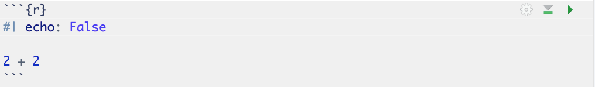
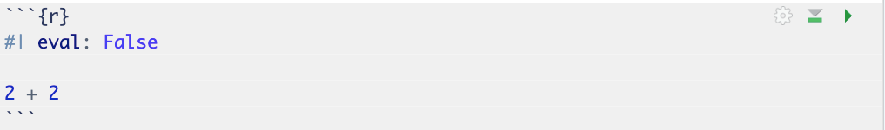

# no required packages for this labLab 00: Introduction to Quarto
PSTAT 100: Summer Session A 2025 (Instructor: Ethan P. Marzban)
Required Packages
Lab Objectives
This lab covers the following topics:
- Basics of Markdown syntax
- Basics of LaTeX syntax
- Code chunk options in
.qmdfiles
Relevant Textbook Chapters/Sections:
- Portions of Chapter 28 and Chapter 29 in R4DS
Markdown Syntax
As a data scientist, it is crucial that we are able to summarize and present our work in a meaningful and coherent manner. Part of this entails writing documents that showcase our results, outline our methodologies, or even convey questions we may have. Thankfully, there exist a great many technological tools to aid in this. One such tool is the markdown langauge, which is a simple markup langauge used to format digital documents. Different programming languages have associated markdown capabilities; Posit (the parent company of R) has developed Quarto to that end, which, as defined on their home website, is “an open-source scientific and technical publishing system.”
We’ve actually been using Quarto, behind the scenes, for the past two labs! You might have noticed that the file extensions for our lab handouts is .qmd, which stands for Quarto Markdown Document. In a .qmd document, standard text is typeset (this is the verb often used to describe the process of turning a markdown file into a .pdf or .html file that can be more easily shared and published) as-is. For example, this text appears exactly the same in the final .pdf as it appears in our text editor. Certain stylistic qualities, however, are accomplished using various syntactical notation:
**Boldface Text**or__Boldface Text__gets typeset as Boldface Text_Italicized Text_or*Italicized Text*gets typeset as Italicied Text~Subscript~gets typeset as Subscript^Superscript^gets typeset as Superscript`
Monospace Text` gets typeset asMonospace Text(the ` symbol is called the backtick symbol, and is found near the upper-left corner of most keyboards, on the same key as the tilde ~ )
The above are fairly standard markdown syntax; Quarto markdown also allows for easy underlining of text:
[This text]{.underline}gets typset as This text
Quarto also supports both enumerated and unenumerated lists. Enumerated lists can be typeset using
1) Item 1
2) Item 2
3) Item 3which typesets as
- Item 1
- Item 2
- Item 3
whereas unenumerated lists can be typeset using
- Item 1
- Item 2
- Item 3which typesets as
- Item 1
- Item 2
- Item 3
The exact symbols you use for the bullet points are not unique; for example, (1) (2) (3) is another valid way of demarcating the elements in an enumerated list, and * is another valid way of demarcating the elements in an unenumerated list.
Typesetting Equations
Up until now, it might not be clear why .qmd documents are any more useful than, say, a standard Word document. There are two main aspects in which .qmd files outperform Word documents: in their equation support, and in their support of code chunks. Let’s explore the former first.
Quarto, behind the scenes, uses a typesetting language called LaTeX (pronounced either “LAY-teck” or “LAH-teck”). LaTeX itself has its own syntax, which we will cover now. First, there are two main types of equations in LaTeX: inline, and display-style. Inline equations are those that appear in the body of a paragraph, like \(f(x) = x^2\). Displaystyle equations appear centered in a separate line: \[ \overline{x}_n := \frac{1}{n} \sum_{i=1}^{n} x_i \] Inline equations are enclosed by single dollar signs (like $f(x) = x^2$) and display-style equations are enclosed by double dollar signs (like $$\frac{1}{x}$$).
Within a particular equation environment (inline or displaystyle), we can use the following syntax to format equations:
- Exponentiation:
a^b, which gets typeset as \(a^b\)- Note that, by default, exponentiation only gets applied to the character immediately following the caret (^) symbol. For example,
e^abgets typeset as \(e^ab\) wherease^{ab}gets typeset as \(e^{ab}\).
- Note that, by default, exponentiation only gets applied to the character immediately following the caret (^) symbol. For example,
- Subscript:
a_b, which gets typeset as \(a_b\) - Fractions:
\frac{a}{b}, which gets typeset as \(\frac{a}{b}\) - Square Roots:
\sqrt{a}, which gets typset as \(\sqrt{a}\) - nth Roots:
\sqrt[n]{a}, which gets typeset as \(\sqrt[n]{a}\)
Here are a couple of useful notations that appear commonly in statistics and data science:
- Overline (for sample means):
\overline{x}, which gets typeset as \(\overline{x}\) - Double-barred Letters:
\mathbb{P}which gets typeset as \(\mathbb{P}\) (e.g. a probability measure),\mathbb{E}which gets typeset as \(\mathbb{E}\) (e.g. an expectation)
We can also typeset operators:
- Sums:
\sum, like\sum_{i=1}^{n} x_iwhich gets typeset as \(\sum_{i=1}^{n} x_i\) - Integrals:
\int, like\int_{0}^{1} f(x) \ \mathrm{d}xwhich gets typeset as \(\int_{0}^{1} f(x) \ \mathrm{d}x\) (note that\mathrm{}creates an upright letter, like the differential operator) - Unions:
\cup, likeA \cup Bwhich gets typeset as \(A \cup B\) - Intersections:
\cap, likeA \cap Bwhich gets typeset as \(A \cap B\)
Finally, it should be noted that parentheses and brackets don’t automatically scale with equation. For example, (\frac{1}{2}) gets typeset (in display-style) as \[ (\frac{1}{2} ) \] which looks a little comical (considering how small the parentheses are in comparison to the fraction). This is why it is common to use \left( and \right) in place of ( and ). For example, \left( \frac{1}{2} \right) gets typeset as \[ \left( \frac{1}{2} \right) \]
Tip
If you are planning on pursuing a career in data science and/or statistics (or really any STEM-related field), I highly recommend taking a moment to learn even more about LaTeX. A great resource is Overleaf, which also includes a “Learn LaTeX in 30 minutes” guide.
Code Chunks
Finally, as mentioned above, Quarto documents are incredibly useful in that they allow for easy inclusion and execution of code. To create a code chunk in a Quarto document, you can either click the “insert new code chunk” button (displayed with a +C, near the top of your console), or:
- Start a chunk by typing three backticks and
{r}; i.e.```{r} - Write your code
- Close the chunk by typing three backticks; i.e.
```
For example:
2 + 2[1] 4Notice that, by default, both the code chunk and its output are automatically displayed. Suppose we want to only include a code chunk, but not its output. One way to do this is to modify the code chunk options, specifically by including the line #| eval: False. For example:

gets typeset as
[1] 4If we want to include only the code chunk’s output, but not the code chunk itself, we use echo = False. For example,

gets typeset as
2 + 2
Tip
For a more detailed list of code chunk options, consult the relevant help site from Quarto itself.
Some Selected Exercises
Typeset the following equation, which provides a formulation of the Riemann-Zeta function (a very famous function from mathematics). \[ \zeta(s) = \sum_{n=1}^{\infty} \frac{1}{n^s} = \frac{1}{\Gamma(s)} \int_{0}^{\infty} \frac{x^{s - 1}}{e^x - 1} \ \mathrm{d}x \]
Type the following sentence, paying attention to the formatting (e.g. boldface, italics, etc.):
The quick brown fox jumped over thelazydog.